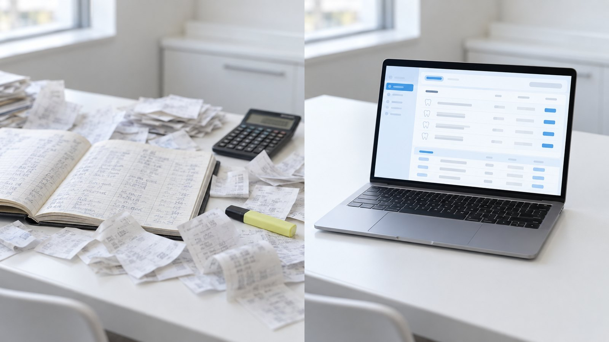
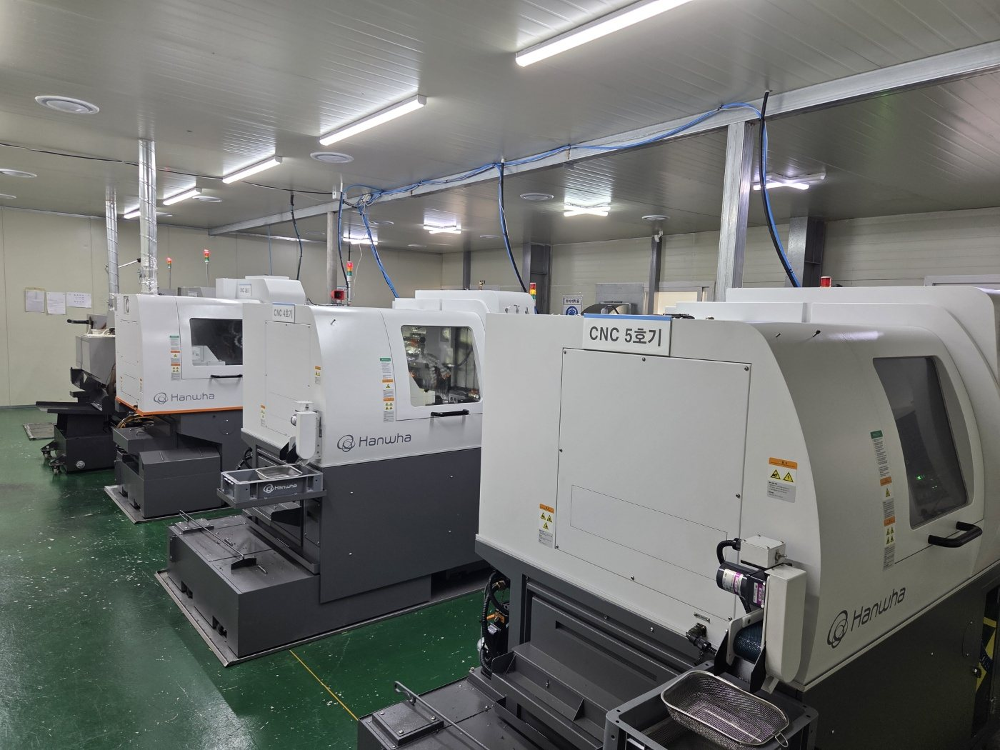

진료실의 불편을,
직접 바꾸기 시작했습니다.
보이지 않는 면까지 설계하고, 장부와 정산을 조금 더 간단하게. 치과의사이자 개발자인 이준호 원장의 진료실에서 어벗츠 기공소의 설계 기준과 의뢰 프로그램(abuts.fit)이 시작된 이야기입니다.

하루의 마지막 일은
진료가 아니었습니다.
마지막 환자가 돌아간 뒤에도 치과의 하루는 끝나지 않습니다. 기공소에 보낸 의뢰가 어디까지 왔는지 전화로 묻고, 메신저에 흩어진 파일을 다시 찾고, 월말이면 수기 장부와 거래 내역을 한 줄씩 대조합니다.
많은 치과에서 익숙한 이 장면을, 치과의사이자 개발자인 이준호 원장은 조금 다르게 바라봤습니다. 불편을 참는 대신, 직접 바꿀 수 있는 방법을 찾기로 한 것입니다.
현장에서 필요한 일을
더 편리하고 간편하게 할 수 없을까?
보이지 않는 면은 설계로.
업무의 번거로움은 프로그램으로.
장부를 넘기던 손이
화면을 봅니다.
수기 장부 · 전화 · 메신저
- 진행 상황은 전화로 다시 확인
- 파일은 메신저로 따로 전송
- 월말마다 장부와 내역을 대조
abuts.fit 의뢰 화면
- 준비 · 가공 · 출고 · 완료 단계를 화면에서
- 파일 · 요청 사항을 의뢰 한 건에 첨부
- 사용분만 모아 월말 계산서로
보이지 않는 면까지
설계하는 기준으로.


진료실에서 시작된 기공소,
싱글 2건으로 만나 보세요.
가입과 프로그램 이용은 무료이고, 싱글 2건은 무료로 테스트할 수 있습니다. 처음 한 건은 담당자가 함께 등록해 드립니다.

임플란트 보철부터 크라운까지 받는 치과기공소. 커스텀 어벗먼트는 하단부까지 설계합니다. 의뢰는 어벗츠 프로그램(abuts.fit)으로 받고, 싱글 2건은 무료로 테스트할 수 있습니다.
이어서 읽어 보세요.
치과 기공료 정산, 월말 계산서 한 장으로 정리하는 법 | 어벗츠 기공소
어벗츠 기공소의 기공료를 크레딧(거래 선수금)과 사용분 기준 월말 계산서로 정리하는 방법. 무료 테스트, 비용 구성, 환불, 리메이크 조건을 한눈에 정리했습니다.

커스텀 어벗먼트 CNC 제작 과정, 파일 한 건이 치과까지 | 어벗츠 기공소
어벗츠 기공소에 의뢰한 커스텀 어벗먼트가 만들어지는 과정. 하단부까지 설계한 디자인, 산업용 CNC 가공, 치수 검사, 출고까지 제작 공정과 가공실 사진을 소개합니다.

치과 기공 의뢰, 전화 대신 화면으로 확인하는 법 | 어벗츠 기공소
치과에서 어벗츠 기공소로 보내는 기공 의뢰를 어벗츠 프로그램(abuts.fit) 화면으로 등록하고, 진행 단계와 송장까지 확인하는 방법을 이야기로 정리했습니다.